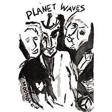

Planet Waves

Released: January 17, 1974
Length: 42:12
Producer: Rob Fraboni
Label: Asylum
Side 1
On a Night Like This
Going, Going, Gone
Tough Mama
Hazel
Something There Is about You
Forever Young
Side 2
Forever Young (2)
Dirge
You Angel You
Never Say Goodbye
Wedding Song